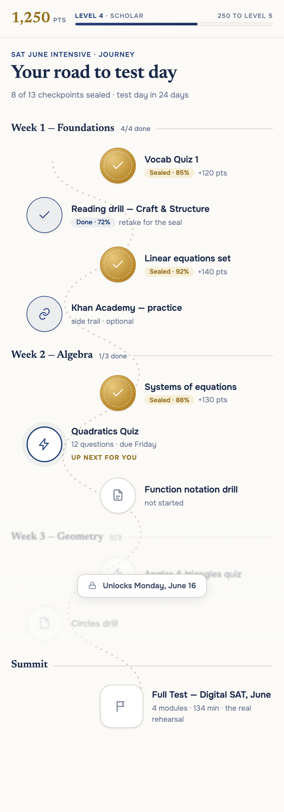
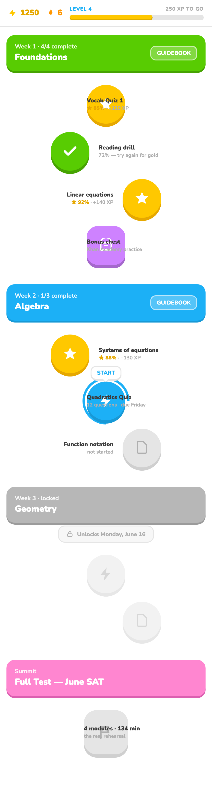
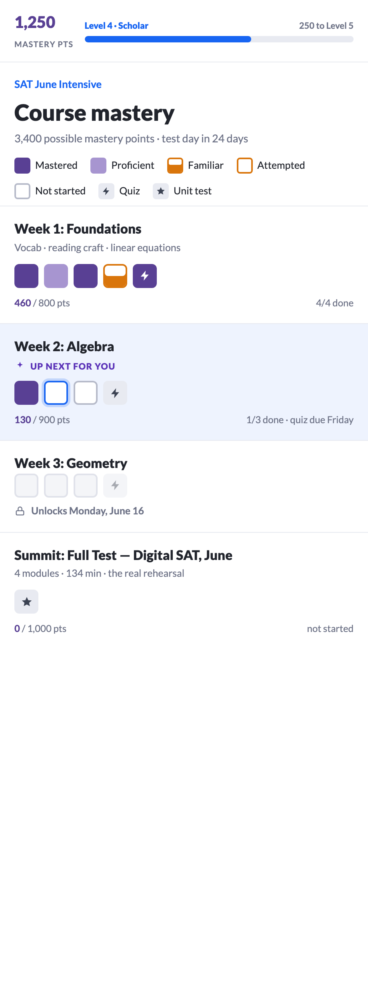

DECISION (2026-06-12): C — Khan-style mastery grid — chosen and built (see docs/JOURNEY_VIEW.md). A and B were judged over-designed with weak aesthetics/layout as mocked; if a path-style journey is revisited later it needs a fresh design pass, not a port of these. The shipped build keeps Khan's structure but uses the app's own theme tokens, not this mockup's literal Khan palette.
Same course, same data in all three: Week 1 complete (two gold-seal scores ≥80%, one 72% retakeable), Week 2 in progress with "up next", Week 3 locked until June 16, and the full test as the summit. All three include the mastery-points + level header you picked. Click the live links under each to feel the hover/motion — the static shots undersell the Ivy and Duolingo ones.


